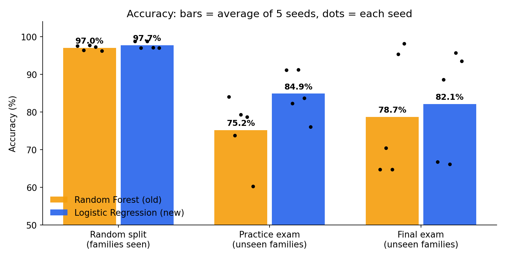
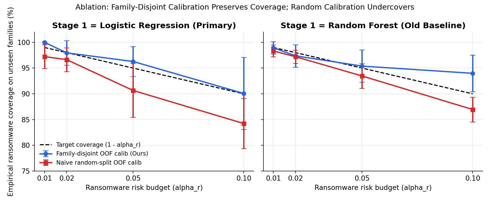
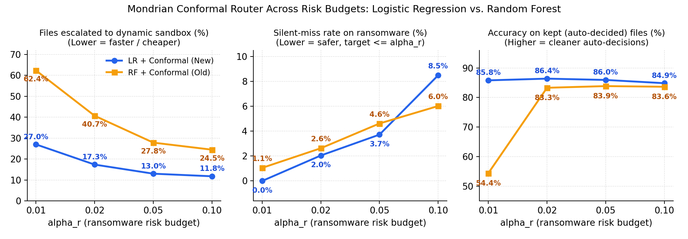
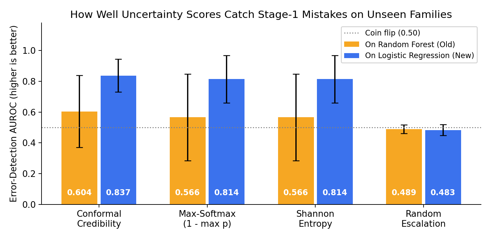
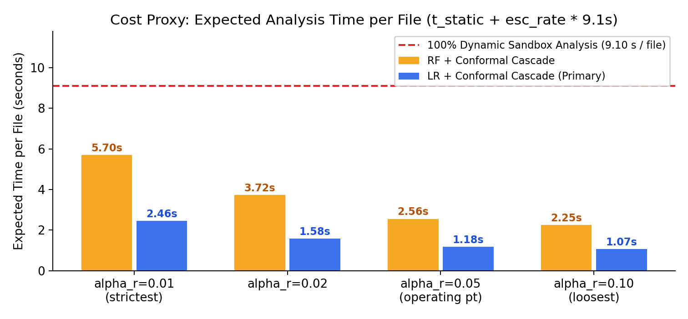

static/) & Lavanya Manocha (Stage 2: Conformal Trust Router, trust/)Modern endpoint defences face an unavoidable trade-off between two types of analysis:
We build a Trust-Calibrated Cascade where Stage 1 outputs probabilities and a Class-Conditional (Mondrian) Conformal Router — calibrated exclusively on family-disjoint out-of-fold (OOF) predictions — decides which predictions can be trusted immediately (KEPT) and which uncertain files must be sent to deeper dynamic analysis (ESCALATED).
Keeping track of every design update for our research paper:
| Component | Initial Spec Plan (14 Nov 2026) | Final Implemented Repo (16–17 Nov 2026) & Why |
|---|---|---|
| Dataset | RansomTrack static features first; Sgandurra deferred to v1. | Sgandurra (EldeRan) dataset (1,524 files, 30,967 binary behavioural features, 11 ransomware families) converted to sparse CSR format (X_sparse.npz, shrinking ~189 MB in memory to ~1.6 MB). |
| Benign Family Grouping | Fallback: group benign files randomly if family labels are missing. | Built 20 balanced similarity clusters (benign_g00..benign_g19) using TruncatedSVD (50 components) + KMeans (k=20) in static/groups.py, fixing an initial cosine clustering that put 804/942 benign files in one group. |
| Split Protocol & Seeds | 20% test families; 3-fold inner CV (move to 5-fold in v1); seed 0 first, up to 5 seeds. | Upgraded directly to 25% test families (3 of 11 ransomware families + 5 of 20 benign groups per seed), 5-fold inner CV (StratifiedGroupKFold(5)), and completed all 5 seeds (0 to 4). |
| Feature Pipeline | Variance filter → log1p → StandardScaler → Mutual-Info top-k. | Only VarianceThreshold(0.0) (~19,285 active features kept). Because all 30,967 features are binary 0/1, log1p and scaling are unnecessary; 30k mutual-info tuning was skipped for speed. |
| Stage-1 Classifier | Random Forest (300 trees, balanced_subsample). | Upgraded primary model to L2 Logistic Regression (C=1.0, class_weight='balanced', liblinear) after RF dropped to 75.2% on unseen-family OOF. RF is kept as a comparison baseline (--model rf). |
| Stage-2 Trust Router | Mondrian Conformal Router (αb=0.10, αr ∈ {0.01, 0.02, 0.05, 0.10}) + 4 baselines + group vs. random ablation. | Implemented 100% to spec in trust/, verified by unit tests in tests/test_conformal.py and tests/test_splits.py. |
VariableNames.txt: Strings STR (16,267), Registry actions REG (6,622), File operations FILES (4,141), Directory enumerations DIR (2,424), File extensions FILES_EXT (935), Dropped files DROP (346), and Windows API calls API (232).ransom_f01 (50), f02 (107), f03 (46), f04 (25), f05 (64), f06 (97), f07 (59), f08 (4), f09 (90), f10 (6), f11 (34).static/groups.py projects the benign feature matrix onto 50 SVD components and runs KMeans into 20 balanced benign groups.common/splits.py)outer_split, per seed 0..4): Holds out 25% of families from each class — 3 ransomware families + 5 benign groups (8 families total, 302 to 479 files) — as the unseen final-exam test set. The remaining ~75% of families (8 ransomware families + 15 benign groups, 1,045 to 1,222 files) form the development (dev) set.inner_folds(..., mode='group')): Splits dev into 5 folds by family using StratifiedGroupKFold(5). Each fold is held out once and scored by a model trained on the other 4 folds. Thus, every dev file receives an out-of-fold (OOF) probability score from a model that never saw its family.inner_folds(..., mode='random')): Splits dev into 5 folds at random using StratifiedKFold(5), where the same family appears in both training and validation. Saved strictly to prove why random-split calibration fails under family shift.check_splits & validate_preds): Automated assertions verify zero family overlap between dev and test, zero family overlap inside every group fold, and valid probabilities summing to 1.0.--model rf): VarianceThreshold(0.0) + RandomForestClassifier(n_estimators=300, class_weight='balanced_subsample'). On random splits it achieved 97.0% accuracy, but on unseen families (family-wise OOF) it dropped by 21.8 points to 75.2% accuracy, raised false alarms on 36.8% of benign files, and had poorly calibrated probabilities (Brier 0.183). Because there are 30,967 features and only ~1,100 training files, decision trees memorised exact feature combinations specific to the training families.--model lr): VarianceThreshold(0.0) + LogisticRegression(C=1.0, max_iter=2000, class_weight='balanced', solver='liblinear'). Selected using only development OOF scores (never touching test families). Instead of memorising narrow tree rules, it adds up small L2-regularised weights across all ~19,285 active behaviours. On unseen families (OOF), it boosted accuracy to 84.9% (+9.7 pts), cut false alarms to 21.3% (−15.5 pts), raised AUC from 0.843 to 0.928, improved Brier calibration to 0.125, and ran 11× faster (1.95 ms vs. 21.55 ms per file).trust/conformal.py)Instead of trusting a raw probability threshold like 0.5, the trust layer uses Class-Conditional (Mondrian) Inductive Conformal Prediction calibrated on the family-disjoint OOF scores of dev:
dev, we collect true-class nonconformity scores separately for real benign files (c = 0, size n0) and real ransomware files (c = 1, size n1). Keeping classes separate is critical so that class imbalance cannot distort the ransomware error rate.route):
{0} or {1}), we trust the prediction set's single label immediately.trust/baselines.py)To make the comparison 100% fair, for each seed and each αransom operating point, every baseline is forced to escalate the exact same fraction of test files (escalate_at_rate) as the Mondrian conformal router:
u_maxsoft): u(x) = 1 − maxc p̂(c ∣ x). Escalates files closest to the 0.5 boundary.u_entropy): u(x) = −∑c p̂(c ∣ x) log p̂(c ∣ x). For binary classification, this is a monotonic function of Max-Softmax and produces identical rankings.u_credibility): u(x) = 1 − maxc pc(x). Escalates files whose best conformal p-value is lowest.u_random): Escalates a uniform random subset of files at the same rate (lower-bound sanity check).data/raw/)RansomwareData.csv (1,524 × 30,970) + VariableNames.txtcommon/build_master.py → data/master.parquetstatic/prepare_X.py → data/X_sparse.npz (1.6 MB RAM)static/groups.py (SVD-50 + KMeans-20)common/splits.py (Outer 25% test families; Inner 5-fold Group & Random CV)static/model.py, static/run_static.py — Owner: Saisha)--model lr (primary Logistic Regression) and --model rf (comparison Random Forest).group, oof), 5-fold random OOF scores (random, oof), and held-out unseen family predictions (group, test). Validated by common/validate.py.
artifacts/preds_static_seed{0..4}.parquet (Columns: seed, cv_mode, role, sample_id, family, y, p_benign, p_ransom)trust/conformal.py, trust/run_trust.py — Owner: Lavanya)dev OOF → computes test p-values → builds prediction sets Γ(x) at αb=0.10, αr ∈ {0.01, 0.02, 0.05, 0.10}.results/)static_runs.csv, static_summary.md, all_runs.csv, summary.csv, curves.csvstatic/plots.py, trust/plots.py)static_*.png (7 plots) + fig1..3_*.png (3 plots) + docs/ explainerstests/)test_splits.py (zero family leakage)test_conformal.py (90% empirical coverage check)| Folder / File | What It Does in the Codebase |
|---|---|
common/config.py | Global constants: SEEDS = [0,1,2,3,4], TEST_FRAC = 0.25, N_INNER = 5, N_BENIGN_GROUPS = 20. |
common/build_master.py | Reads RansomwareData.csv and VariableNames.txt, deduplicates sample IDs, builds data/master.parquet. |
common/data.py | Helper load_master() returning the dataframe and s_* feature column list. |
common/splits.py | outer_split (holds out 25% of families per class), inner_folds (5-fold group vs. random CV), and check_splits. |
common/validate.py | validate_preds(path): verifies schema, no NaNs, probabilities sum to 1, no duplicate IDs, and zero family leakage between OOF and test. |
static/prepare_X.py | Converts the 1,524 × 30,967 binary table into a compressed sparse row matrix data/X_sparse.npz. |
static/groups.py | regroup_benign: runs TruncatedSVD(50) + KMeans(20) on benign files so family-wise CV has 20 balanced benign groups. |
static/model.py | make_static_model: VarianceThreshold(0.0) + either L2 LogisticRegression (kind='lr') or 300-tree RandomForestClassifier (kind='rf'). |
static/run_static.py | Runs the full Stage-1 experiment for a seed and model, measures single-thread inference latency over 100 test files, saves artifacts/preds_static*.parquet and static_summary*.json. |
static/summarize.py & plots.py | Aggregates mean ± std across all 5 seeds into results/static_runs.csv, results/static_summary.md, and 7 results/static_*.png figures. |
trust/conformal.py | Core math: cal_scores, pvalues, prediction_sets, and route (keeps singletons, escalates empty/two-label sets). |
trust/baselines.py | Uncertainty scores (u_maxsoft, u_entropy, u_credibility, u_random) and escalate_at_rate (tie-broken with 10−9 jitter). |
trust/metrics.py | Computes esc_rate, kept_acc, silent_miss, false_alarm_kept, err_caught, esc_precision, coverage, and err_auroc. |
trust/run_trust.py & plots.py | Evaluates conformal routing and baselines across all seeds, writes results/all_runs.csv, summary.csv, curves.csv, and fig1..3_*.png. |
tests/test_splits.py & test_conformal.py | pytest suite checking split disjointness across all 5 seeds and verifying empirical coverage on 4,000 exchangeable synthetic samples. |
| Evaluation Setting / Metric | Random Forest (Old Baseline) | Logistic Regression (Primary) | Improvement (LR vs. RF) |
|---|---|---|---|
| 1. Random-Split CV (Families Seen — "Cheating" Ablation) | |||
| Accuracy | 97.0% ± 0.7% | 97.7% ± 0.9% | +0.7 pts |
| Recall (Ransomware Caught) | 97.1% ± 1.2% | 97.2% ± 1.5% | +0.1 pts |
| False-Positive Rate (False Alarms) | 3.2% ± 1.1% | 2.0% ± 0.7% | −1.2 pts |
| ROC-AUC | 0.996 ± 0.002 | 0.997 ± 0.001 | +0.001 |
| 2. Family-Wise OOF (Unseen Dev Families — Used for Model Selection & Conformal Calibration) | |||
| Accuracy | 75.2% ± 9.1% | 84.9% ± 6.4% | +9.7 pts (Wins 5/5 seeds) |
| Recall (Ransomware Caught) | 93.0% ± 5.1% | 94.2% ± 5.1% | +1.2 pts |
| False-Positive Rate (False Alarms) | 36.8% ± 12.0% | 21.3% ± 7.1% | −15.5 pts (1,225 → 719 FPs) |
| ROC-AUC | 0.843 ± 0.108 | 0.928 ± 0.051 | +0.085 (Wins 5/5 seeds) |
| Brier Calibration Error (lower = better) | 0.183 ± 0.063 | 0.125 ± 0.053 | −0.058 (More honest scores) |
| 3. Held-Out Test Families (Unseen Final Exam — 3 Ransomware Families + 5 Benign Groups per Seed) | |||
| Accuracy | 78.7% ± 16.7% | 82.1% ± 14.6% | +3.4 pts (Wins 4/5 seeds) |
| Recall (Ransomware Caught) | 95.1% ± 2.9% | 92.7% ± 5.3% | −2.4 pts (RF missed 35; LR 53) |
| False-Positive Rate (False Alarms) | 26.8% ± 24.5% | 21.1% ± 22.9% | −5.7 pts (408 → 326 FPs) |
| ROC-AUC | 0.862 ± 0.160 | 0.935 ± 0.083 | +0.073 (Wins 5/5 seeds) |
| Brier Calibration Error (lower = better) | 0.188 ± 0.142 | 0.150 ± 0.140 | −0.038 (Wins 5/5 seeds) |
| 4. Single-Thread Inference Latency (Model Only) | |||
| Milliseconds per File | 21.55 ms | 1.95 ms | 11.0× faster |

results/all_runs.csv, results/summary.csv, and results/fig1..3_*.png were committed at 17:29 on Nov 16 (commit b24e0e1), when artifacts/preds_static_seed*.parquet still held the Random Forest predictions. Later at 20:43 (commit c449533), artifacts/preds_static_seed*.parquet were updated to Logistic Regression. Below, we report both sets of Trust Router results (recomputed directly from the exact prediction files) so you have the complete picture!
Does calibrating on family-disjoint OOF scores preserve the target ransomware coverage (1 − αr) on unseen test families better than naive random-split OOF calibration?
| Target Ransomware Budget αr | Nominal Target Coverage (1 − αr) | With Logistic Regression Stage 1 | With Random Forest Stage 1 (in results/summary.csv) | ||
|---|---|---|---|---|---|
| Family-Disjoint Calib (Ours) | Naive Random Calib | Family-Disjoint Calib (Ours) | Naive Random Calib | ||
| 0.01 | 99.0% | 100.0% ± 0.0% | 97.2% ± 2.3% | 98.9% ± 1.2% | 98.3% ± 1.2% |
| 0.02 | 98.0% | 98.0% ± 2.4% | 96.6% ± 2.3% | 97.4% ± 2.2% | 97.2% ± 1.3% |
| 0.05 (Operating Pt) | 95.0% | 96.3% ± 2.9% | 90.6% ± 5.2% | 95.4% ± 3.1% | 93.5% ± 2.4% |
| 0.10 | 90.0% | 90.1% ± 7.0% | 84.2% ± 4.9% | 94.0% ± 3.6% | 87.0% ± 2.4% |
| Benign Coverage (αb=0.10) | 90.0% | 83.2% ± 23.1% | 71.3% ± 26.2% | 82.5% ± 24.3% | 61.3% ± 30.9% |

| Stage-1 Model | αransom | Escalation Rate (to Dynamic Sandbox) | Kept Accuracy (Auto-Decided) | Silent-Miss Rate (Uncaught Ransomware) | Stage-1 Errors Caught (%) | Expected Time / File (Cost Proxy) |
|---|---|---|---|---|---|---|
| Logistic Regression (Primary) Base test acc: 82.1% Latency: 1.95 ms |
0.01 | 27.0% ± 12.7% | 85.8% ± 19.2% | 0.0% ± 0.0% | 63.5% ± 48.0% | 2.46 s (3.7× faster) |
| 0.02 | 17.3% ± 13.4% | 86.4% ± 16.5% | 2.0% ± 2.4% | 49.8% ± 44.6% | 1.58 s (5.8× faster) | |
| 0.05* | 13.0% ± 11.9% | 86.0% ± 15.4% | 3.7% ± 2.9% | 34.8% ± 47.0% | 1.18 s (7.7× faster) | |
| 0.10 | 11.8% ± 7.2% | 84.9% ± 12.7% | 8.5% ± 8.2% | 28.8% ± 33.3% | 1.07 s (8.5× faster) | |
| Random Forest (Old Baseline) Base test acc: 78.7% Latency: 21.55 ms |
0.01 | 62.4% ± 43.7% | 54.4% ± 34.9% | 1.1% ± 1.2% | 56.5% ± 42.3% | 5.70 s (1.6× faster) |
| 0.02 | 40.7% ± 29.0% | 83.3% ± 17.7% | 2.6% ± 2.2% | 42.3% ± 38.6% | 3.72 s (2.4× faster) | |
| 0.05* | 27.8% ± 22.0% | 83.9% ± 16.3% | 4.6% ± 3.1% | 35.2% ± 39.6% | 2.56 s (3.6× faster) | |
| 0.10 | 24.5% ± 21.7% | 83.6% ± 16.5% | 6.0% ± 3.6% | 28.4% ± 36.2% | 2.25 s (4.0× faster) |
*Pre-fixed primary operating point (αbenign = 0.10, αransom = 0.05). Notice how upgrading Stage 1 from Random Forest to Logistic Regression cuts the escalation rate more than in half (from 27.8% to 13.0% at αr=0.05, and from 62.4% to 27.0% at αr=0.01) while keeping silent misses below the target budget αr!

At the strictest budget αr = 0.01 (27.0% escalation on LR) and the nominal operating point αr = 0.05 (13.0% escalation on LR, 27.8% on RF):
| Stage-1 Model & Setting | Routing Method | Escalation Rate | Kept Accuracy | Silent-Miss Rate | Errors Caught | Error-Detection AUROC |
|---|---|---|---|---|---|---|
| Logistic Regression at αr = 0.01 (Strictest safety) |
Mondrian Conformal (Ours) | 27.0% | 85.8% | 0.0% | 63.5% | Set-based router |
| Conformal Credibility | 27.0% | 88.7% | 0.0% | 70.7% | 0.837 ± 0.106 | |
| Max-Softmax (1 − max p) | 27.0% | 87.7% | 0.0% | 67.9% | 0.814 ± 0.155 | |
| Shannon Entropy | 27.0% | 87.7% | 0.0% | 67.9% | 0.814 ± 0.155 | |
| Random Escalation | 27.0% | 82.0% | 4.8% | 24.0% | 0.483 ± 0.036 | |
| Logistic Regression at αr = 0.05 (Nominal operating pt) |
Mondrian Conformal (Ours) | 13.0% | 86.0% | 3.7% (≤ 5% target) | 34.8% | Set-based router |
| Conformal Credibility | 13.0% | 85.8% | 2.1% | 50.2% | 0.837 ± 0.106 | |
| Max-Softmax / Entropy | 13.0% | 85.8% | 1.2% | 54.1% | 0.814 ± 0.155 | |
| Random Escalation | 13.0% | 81.8% | 6.2% | 10.2% | 0.483 ± 0.036 | |
| Why does Max-Softmax have a slightly lower silent-miss rate at αr=0.05 when forced to escalate 13.0%? Because Max-Softmax cannot choose how many files to escalate — it only works above because we gave it the 13.0% escalation rate discovered by the Conformal Router! Furthermore, across all thresholds, Conformal Credibility achieves the highest Error-Detection AUROC (0.837 vs. 0.814 for Max-Softmax/Entropy). | ||||||


static/ (representing the fast, fixed first stage of the cascade), the Sgandurra dataset features were originally recorded from sandbox runs. In v1, we will pair pure static PE/Radare2 features with Frida dynamic features.results/summary.csv: As noted in Section 4.2, the committed results/summary.csv reflects the Random Forest run from commit b24e0e1; re-running python -m trust.run_trust and python -m trust.plots updates results/ to the Logistic Regression numbers shown in Table 4.2 above.python -m common.build_master — builds data/master.parquet from data/raw/.python -m static.prepare_X — builds sparse matrix data/X_sparse.npz.python -m static.run_static --seed 0 (repeat for seeds 1..4; add --model rf for the Random Forest baseline).python -m static.summarize & python -m static.plots — writes Stage-1 tables and plots in results/.python -m trust.run_trust & python -m trust.plots — runs the Mondrian Conformal Router and baselines, writing results/all_runs.csv, summary.csv, curves.csv, and fig1..3_*.png.pytest — runs tests/test_splits.py and tests/test_conformal.py.| Milestone | Planned Work |
|---|---|
| 1. Stage-2 Dynamic Classifier | Train the dynamic classifier on runtime features for escalated samples and compute true end-to-end 2-stage cascade accuracy and recall. |
| 2. ZRS Autoencoder Arm | Add a zero-shot reconstruction-error anomaly arm alongside conformal p-values to catch completely out-of-distribution empty sets (|Γ(x)| = 0). |
| 3. Adversarial Evasion Test | Inject benign features into ransomware test vectors (feature-space evasion) and verify that the conformal router escalates evasive samples when Stage-1 confidence degrades. |
| 4. Temporal Drift Split | Evaluate on timestamp-ordered splits in addition to family-disjoint splits to measure multi-year concept drift directly. |